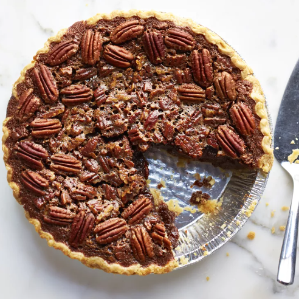

Pecan Pie

Description
There are few things quite as comforting as a sweet, rich, nutty pecan pie. Looking for the best pecan pie recipe ever? The Allrecipes community can't get enough of this top-rated recipe — it's simple, delicious, and it comes together in under an hour with basic ingredients.
Ingredients
- 1 ¾ cups white sugar
- ¼ cup dark corn syrup
- ¼ cup butter
- ¼ teaspoon salt
- 1 ¼ cups chopped pecans
- 1 (9 inch) unbaked pie shell
Steps
- Preheat the oven to 350 degrees F (175 degrees C).
- Combine sugar, corn syrup, butter, water, and cornstarch in a saucepan over medium heat. Bring to a full boil, and remove from heat.
- In a large bowl, beat eggs until frothy. Gradually beat in cooked syrup mixture. Stir in salt, vanilla, and pecans. Pour into pie shell.
- Bake in the preheated oven until filling is set, 45 to 50 minutes.